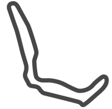
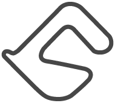
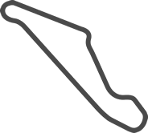
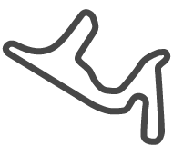
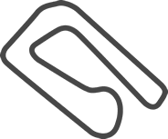
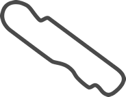
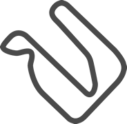
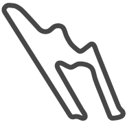
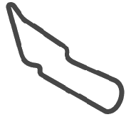

25 DE FEBRERO 2024
EL CAFAYATE
Autódromo Enrique “Quique” Freile
1° Tobias MARTINEZ
2° Esteban GINI
3° Jose Manuel URCERA
17 DE MARZO 2024
VIEDMA
Autódromo de Viedma
1° Julian SANTERO
2° Mariano WERNER
3° Marcos QUIJADA
07 DE ABRIL 2024
NEUQUEN
Parque Provincia de Neuquen
1° Jose Manuel URCERA
2° Elio CRAPARO
3° Jonatan CASTELLANO
28 DE ABRIL 2024
TOAY, LA PAMPA
Autódromo Pcia. de la Pampa
1° Mariano WERNER
2° Diego CIANTINI
3° Mauricio LAMBIRIS
12 DE MAYO 2024
TERMINAS DE RIO HONDO
Termas de Rio Hondo - Largo
1° Valentin AGUIRRE
2° Julian SANTERO
3° Gaston MAZZACANE
26 DE MAYO 2024
CONCEPCION DEL URUGUAY
Autódromo Concepcion del Uruguay
1° German TODINO
2° Julian SANTERO
3° Marcos QUIJADA
16 DE JUNIO 2024
RAFAELA
Autódromo Ciudad de Rafaela
07 DE JULIO 2024
POSADAS
Autódromo Rosamonte
28 DE JULIO 2024
SAN JUAN
Autódromo San Juan Villicum
18 DE AGOSTO 2024
CIUDAD DE BUENOS AIRES
Autódromo Oscar y Juan Galvez
